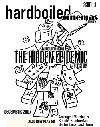

<div class="sidebar" id="issues">

<!--pagename, work in progress

<div class="pagename" id="issues">
archived issues
</div>

-->

<br>	
<h2><span class="isnumber">issue 11.3</span><br>
<span class="isdate">December 2007</span></h2>

<h3>Want to read the original <a href="113.pdf">pdf?</a></h3>

table of contents<br><br>
<ul>
<li><a href="index.html"><span class="article">editor's note</span><br></a>
<span class="author">by brian lau</span></li>
<br>
<li><a href="113-3-celebration.html"><span class="article">celebrating asian american women</span><br></a>
<span class="author">by wendy gu</span></li>
<br>
<li><a href="113-4-where.html"><span class="article">where is my "shadow"?</span><br></a>
<span class="author">by jennifer phung</span></li>
<br>
<li><a href="113-5-running.html"><span class="article">running to end human slavery</span><br></a>
<span class="author">by susan moua</span></li>
<br>
<li><a href="113-6-house.html"><span class="article">house of broken tiles</span><br></a>
<span class="author">by alice tse</span></li>
<br>
<li><a href="113-7-down"><span class="article">down the aisle</span><br></a>
<span class="author">by crissy chung</span></li>
<br>
<li><a href="113-8-race.html"><span class="article">race to disgrace: tila tequila</span><br></a>
<span class="author"></span>by brian lau</li>
<br>
<li><a href="113-9-better.html"><span class="article">better luck last time</span><br></a>
<span class="author">by eunice kwon</span></li>
<br>
<li><a href="113-10-interview.html"><span class="article">interview with connie lim</span><br></a>
<span class="author">by pauline sze</span></li>
<br>
<li><a href="113-11-thai.html"><span class="article">thai: my life and rhymes</span><br></a>
<span class="author">by albert chen</span></li>
<br>
<li><a href="113-12-little.html"><span class="article">little tokyo in danger?</span><br></a>
<span class="author">by davin chang</span></li>
</ul>
</div>
